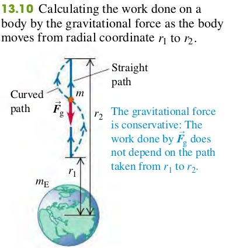
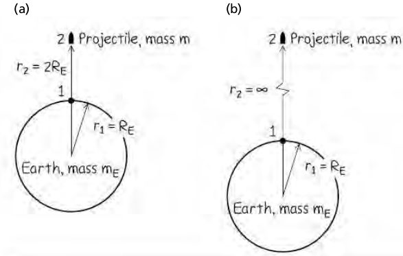

For problems in which a body can be far from the earth's surface, we need a more general expression for gravitational potential energy.

The work Wgrav done by the gravitational force when the body moves directly away from the center of the earth from r1 to r2 is given by
Wgrav=∫r1r2Frdr(1)
Fr is opposite to the moving direction of the object, so Fr is negative
We now define the corresponding potential energy U, so that Wgrav=U1−U2. Comparing with Eq. (3), we see that the appropriate definition for gravitational potential energy is
U=−rGMEm(4)
More on Gravitational potential energy
When we are close to the earth's surface, in the denominator we may replace r1 and r2 by the radius of Earth RE, so
Wgrav=GMEm⋅r1r2r1−r2=GMEm⋅RE2r1−r2
g=RE2GME, therefore
Wgrav=mg(r1−r2)
Examples
(13.5) In Jules Verne's 1865 story with this title, three men went to the moon in a shell fired from a giant cannon sunk in the earth in Florida.
(a) Find the minimum muzzle speed needed to shoot a shell straight up to a height above the earth equal to the earth’s radius RE.
(b) Find the minimum muzzle speed that would allow a shell to escape from the earth completely (the escape speed). Neglect air resistance, the earth's rotation, and the gravitational pull of the moon.

(13.16) Volcanoes on Io. Jupiter's moon Io has active volcanoes (in fact, it is the most volcanically active body in the solarsystem) that eject material as high as 500 km (or even higher) above the surface. Io has a mass of 8.93×1022 kg and a radius of 1821 km. For this calculation, ignore any variation in gravity over the 500-km range of the debris. How high would this material go on earth if it were ejected with the same speed as on Io?
Solution
Todo
(13.17) Use the results of Example 13.5 (Section 13.3) to calculate the escape speed for a spacecraft (a) from the surface of Mars and (b) from the surface of Jupiter. Use the data in Appendix F. (c) Why is the escape speed for a spacecraft independent of the spacecraft's mass?
(13.18) Ten days after it was launched toward Mars in December 1998, the Mars Climate Orbiter spacecraft (mass 629 kg) was 2.87×106km from the earth and traveling at 1.20×104km/h relative to the earth. At this time, what were (a) the spacecraft's kinetic energy relative to the earth and (b) the potential energy of the earth–spacecraft system?
Solution
Todo
(13.19) A planet orbiting a distant star has radius 3.24×106 m. The escape speed for an object launched from this planet's surface is 7.65×103 m/s. What is the acceleration due to gravity at the surface of the planet?
Solution
vesc⇒g=RGM and g=R2GM=2Rvesc2=2⋅3.24⋅106(7.65⋅103)2=9.03m/s2